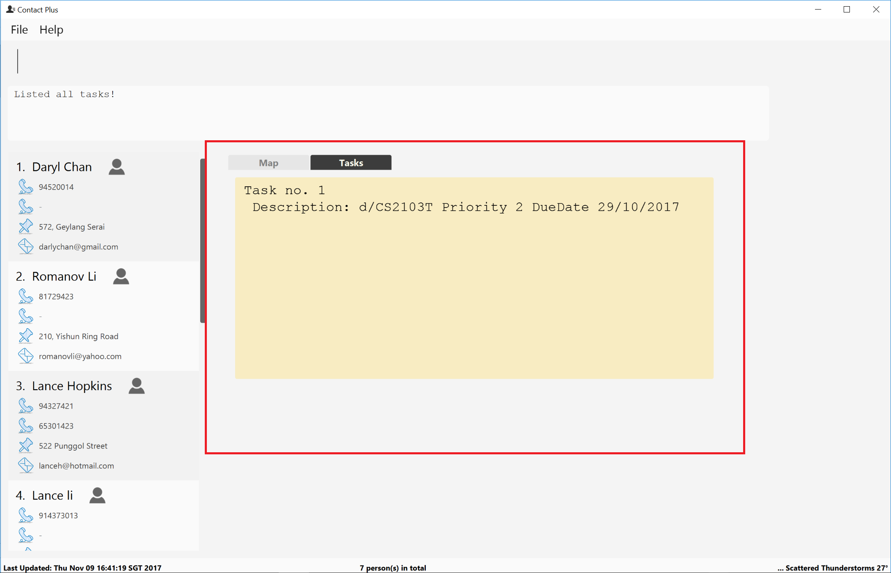

Project: Contact Plus
Contact Plus is a contact-managing service through command line. We strive to provide the very comprehensive services for busy students on the campus so that they can manage their contacts efficiently. In addition to contact-managing, Contact Plus also allows users to manage task all in a single application. Contact Plus is an extension of AddressBook - Level 4 which is a desktop address book application used for teaching Software Engineering principles.The user interacts with it using a CLI, and it has a GUI created with JavaFX. It is written in Java, and has about 6 kLoC.
Code contributed: [Functional code] [Test code] {give links to collated code files}
Enhancement Added: Deleting Multiple Person in a Single Command
External behavior
Start of Extract [from: User Guide]
This command allows you to delete multiple contacts from Contact Plus in a
single command.
Format: delete INDEX/INDEX
How to use
1) Enter list into the Command Box. You will see all the added contacts below.
2) Enter delete 2/3 to delete the 2nd and 3rd person from Contact Plus.
3) You can now see that the 2nd and 3rd contact has been deleted and the
result is displayed to show the confirmation of deletion.
Example
Your input |
Result |
Note that |
Deletes the first and second contact displayed by the |
End of Extract
Justification
It is troublesome to retype the command delete if you are looking to delete multiple person from the contact list.
As Contact Plus aims to achieve efficiency and speed, having this function adds on to it.
Implementation
Start of Extract [from: Developer Guide]
The Delete multiple contacts feature enables user to delete more than one contact in a single command by specifying more than one indices. It is
invoked in the DeleteCommand class.
The interaction between Model and Logic classes can be seen from the following sequence diagram:
The source code below shows the implementation of how multiple persons are deleted by using a loop:
for (Index i : targetIndex) {
if (i.getZeroBased() >= lastShownList.size()) {
throw new CommandException(Messages.MESSAGE_INVALID_PERSON_DISPLAYED_INDEX);
}
}
String result = "";
Collections.sort(targetIndex);
for (Index i : targetIndex) {
ReadOnlyPerson personToDelete = lastShownList.get(i.getZeroBased());
try {
model.deletePerson(personToDelete);
if (targetIndex.size() == 1) {
result = result.concat(personToDelete.toString());
} else {
result = result.concat("\n" + personToDelete.toString());
}
} catch (PersonNotFoundException pnfe) {
assert false : "The target person cannot be missing";
}
}Prerequisites/Dependencies
-
The
Indexto be deleted is added to an ArrayList ofIndex. -
To identify different
Index, Regex/is used. -
ArrayList
Indexneeds to be sorted in descending order to prevent IndexOutOfBound exception.
Design Considerations
Aspect: Implementation of delete Multiple Contact
Alternative 1 (current choice): Add the Index to be deleted to an ArrayList.
Pros: We do not need to care how many Index or the order of the Index being input by the user as long as it
is separated by /.
Cons: Additional space is required for the ArrayList of Index.
Alternative 2: Use 'Lazy' delete by adding a boolean field to each element
Pros: We do not need to remove anything from the ArrayList. The boolean 0 or 1 will just
indicate if the contact has been deleted.
Cons: The whole List has to be iterated to check if the contact has been deleted.
End of Extract
Enhancement Added: Adding a Second Phone Number
External behavior
Start of Extract [from: User Guide]
Add the second phone number for a person by using prefix "p2/"
Format: COMMAND_WORD PARAMETERS p2/PHONE_NUMBER OTHER_PARAMETERS
Examples:
* add n/John Doe p/98765432 p2/73624789 e/johnd@example.com a/John street, block 123, #01-01
* edit 1 p/91234567 p2/73624789 e/johndoe@example.com
End of Extract
Justification
Some contacts may have multiple phone numbers and it is inefficient to create another entry in the addressbook to just add a second phone number.
Enhancement Added: Switching Tab
External behavior
Start of Extract [from: User Guide]
You can choose to switch between the Task tab or Map tab either by clicking on the user interface or
the application will automatically switch it for you based on the command you entered.
Example
-
Before entering any command, you are at the
Tasktab.  -
Enter command
delete 1/2and press ENTER.
-
The tab will be automatically switched to the
Maptab.
End of Extract
Justification
User does not have to do extra work by clicking on the UI to switch tab if they are executing commands that are related to the tab.
Implementation
Start of Extract [from: Developer Guide]
The tab pane will switch between Task and Map based on the command entered by the user. If the
Command input is related to the person model, it will be switched to the Map tab. Likewise, if the
Command input is related to the task model, it will be switched to the task tab.
The interaction between Ui and Logic classes can be seen from the following sequence diagram:

The source code shows how the Command input is checked and how the tab is switched:
private void displayTab(String commandTyped) {
Map<String, String> commandFormatMap = Command.getMapOfCommandFormats();
List listOfAliases = Command.getListOfAvailableCommandAliases();
int index = tabPane.getSelectionModel().getSelectedIndex();
if (commandFormatMap.containsKey(commandTyped) || listOfAliases.contains(commandTyped)) {
if (index != 0) {
tabPane.getSelectionModel().selectFirst();
}
} else {
tabPane.getSelectionModel().selectLast();
}
}Prerequisites/Dependencies
-
The
taskCommands andPersonCommands needs to be stored in different hashmap in theCommandclass.
Design Considerations
Aspect: Implementation of Switch Tab mechanism
Alternative 1 (current choice): Checks the command typed by user to the hashmap of available commands
in Command class which are classified into task commands and Person commands.
Pros: Simple if-else case as the commands are stored in two different hashmaps.
Cons: Additional space is required for two different hashmaps.
End of Extract